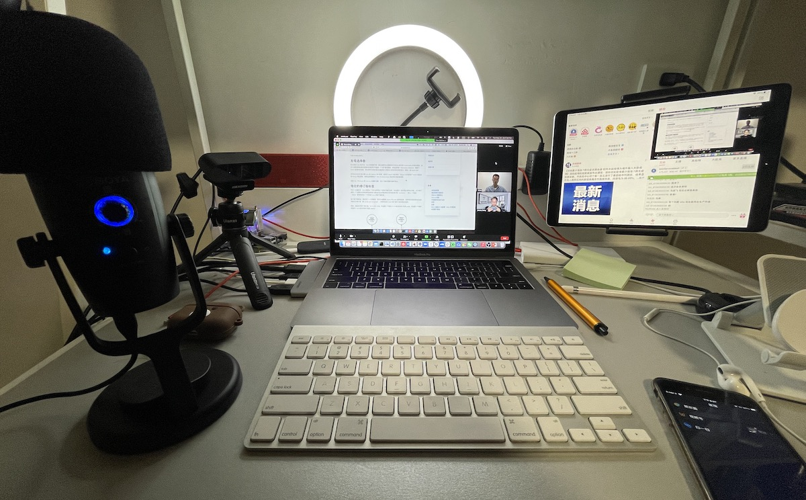
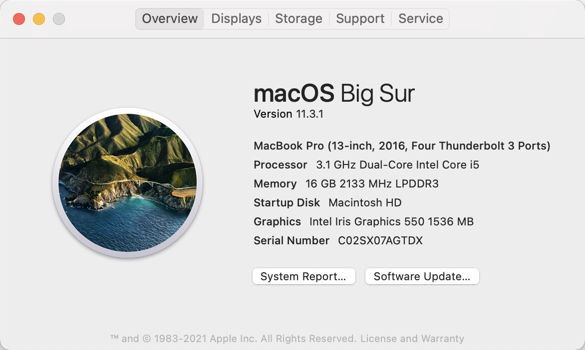
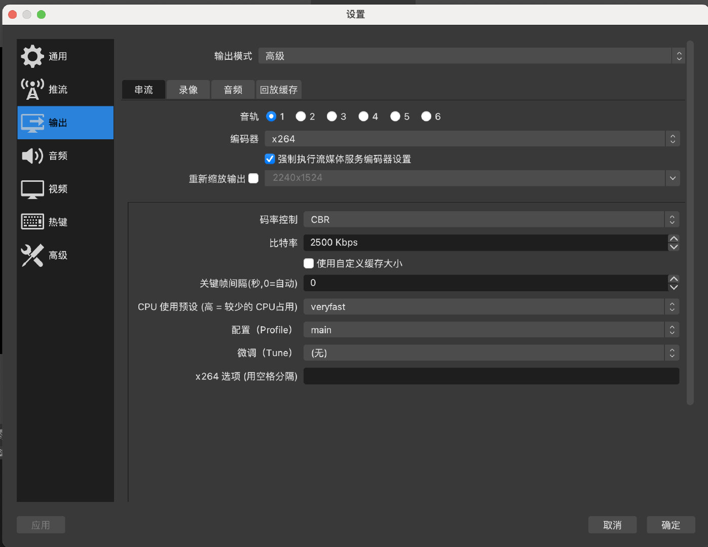
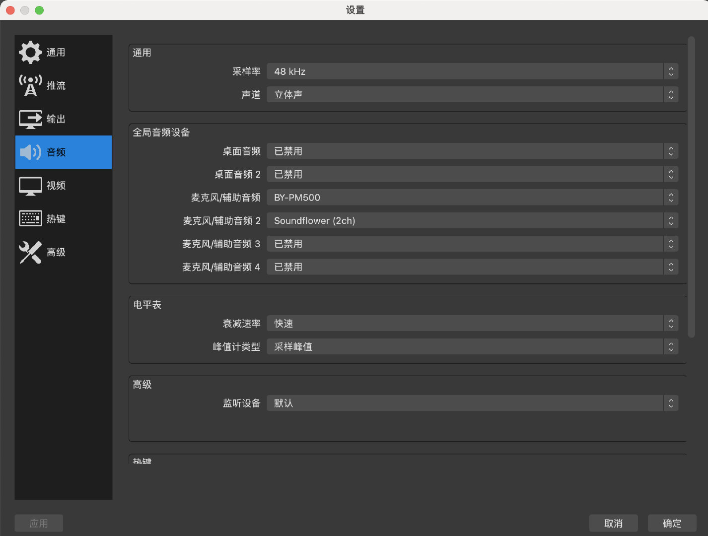
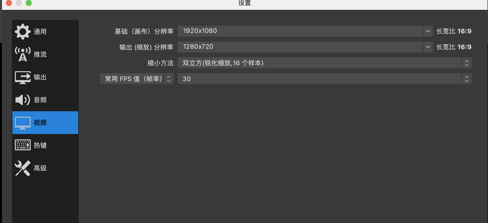
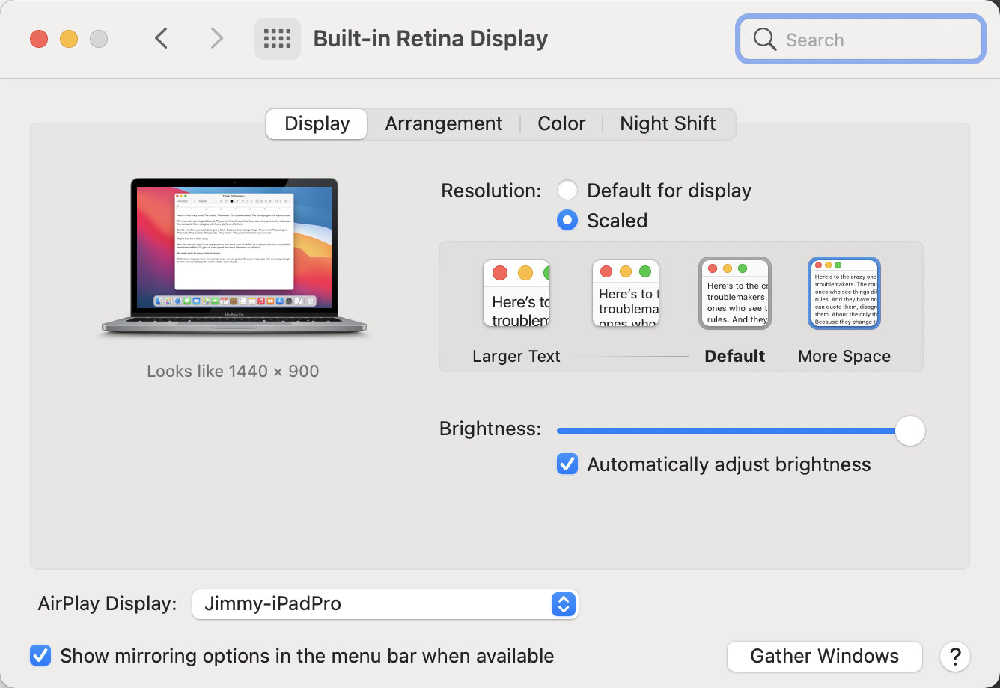
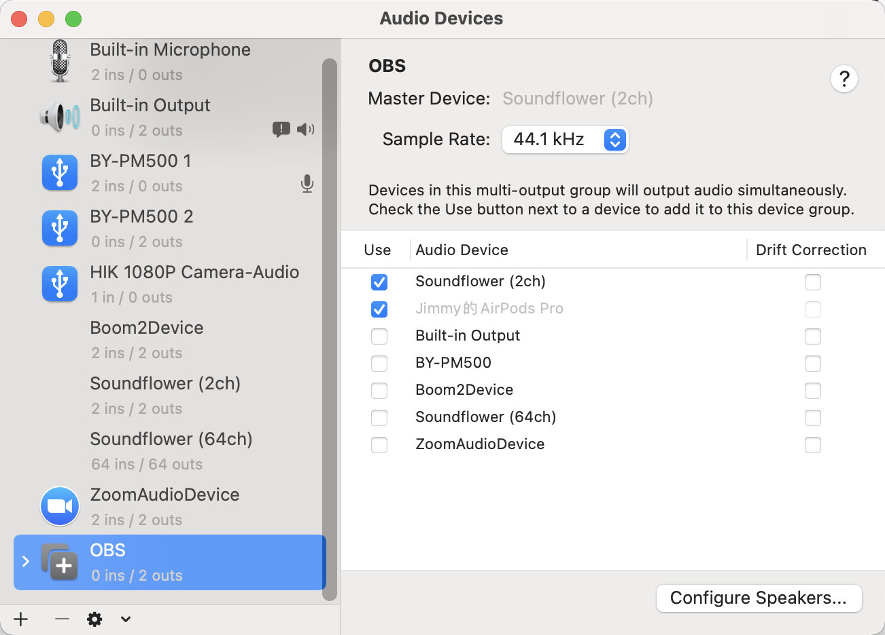
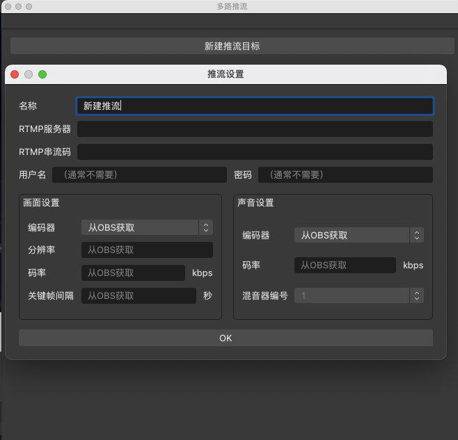
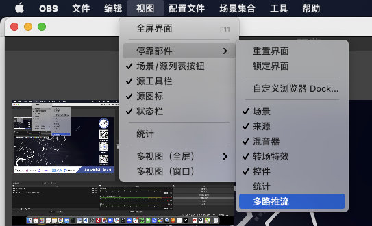

今晚我第一次使用 Zoom + OBS 和马若飞在 B 站上进行了《Istio 大咖说》栏目的第一期分享——「Istio 开源四周年回顾与展望」。考虑到很多社区、主播、调音台会有在 B 站或其他平台上直播的需求，特别将我的个人经验分享给大家，欢迎大家补充，我会不断优化直播体验。
下图是我直播时桌面的情况，使用的设备有：
以上这些不是全部都需要的，只要你有一台电脑和一个耳机就可以直播。

上面是直播时的桌面（请忽略我杂乱的被各种设备占满空间的桌面），下面是我的配置参考。

sudo spctl --master-disable 并在电脑的 系统首选项 的 安全与隐私 中批准来自任意途径的软件安装，如果看到有详情页面，点击进去批准软件发行商下面是在 Macbook 中安装的 OBS 配置截图。
需要注意的是输出、音频和视频的配置。请参考图中的配置，尤其注意编码控制、比特率的配置。


请注意分辨率的配置，同时调整电脑屏幕的分辨率为 1440x900，不要使用太大的分辨率，否则可能导致直播画面黑屏。


安装 sunflower 后，在 Midi 设备中创建一个多输出设备，如图。

选择 Sunflower（2ch）和你想要用来监听系统声音的设备，我是用的是 AirPods，你也可以选择其他耳机，总之不要让麦克风录到这个系统输出的即可。
还要在 OBS 的麦克风配置里增加下新创建的这个输出设备，这样直播的时候就可以收录你的系统，也就是你的耳机听到的声音了，比如在视频会议中，所有人讲话的声音都会被直播出去。
如果安装 sunflower 有问题的话，你也可以购买一款独立的音频设备，要知道一台电脑是可以安装多块声卡的，这些声卡可以通过 USB 接口转接，而且价格都很便宜（只要几十块钱），一旦有了多个声卡，你就可以为不同的音频源选择不同的输出，而且可以对它们的音量进行单独单独控制。例如下面这款 USB 外置声卡（非利益相关），即插即用，不需要安装任何软件。
因为我们在直播时往往有多个渠道，比如多个 B 站直播间、微信视频号等，如何使用 OBS 同步推流到多个渠道呢？可以使用 sorayuki/obs-multi-rtmp 插件（支持 Windows 和 macOS），注意需要将 OBS 升级到最新版本（至少 27.0.1 版本）。安装完插件，重启 OBS 后就可以看到一个窗口新建多路推流，如下图所示。

如果没有看到该窗口，请点击【视图】-【停靠部件】-【多路推流】即可显示。

下面是当晚直播的 zoom 录制的视频直出，已上传到 B 站，大家可以感受下画面的清晰度还有声音效果，我还是比较满意的。
其中只有几个小插曲：
直播是除了在线下面对面交流以外，可以跟社区及开源爱好者交流最直接最友好的方式，我会时常发起，感谢大家的关注我主持的直播间：
关注上面的 B 站账号，获取直播推送提醒。关于 B 站直播，如果你有任何问题或者建议请在下面留言。